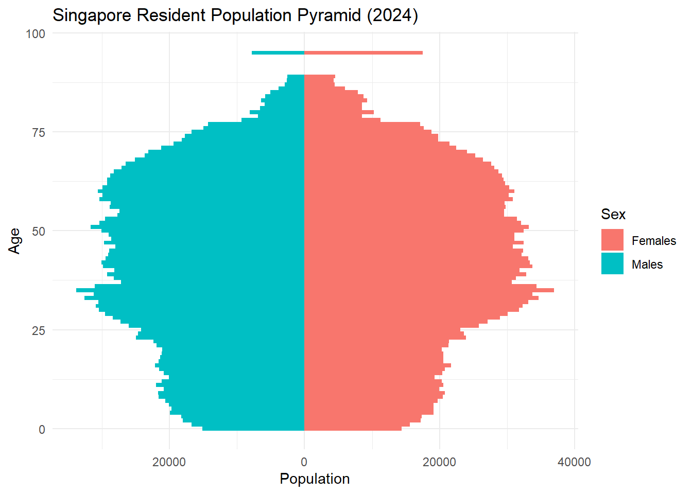
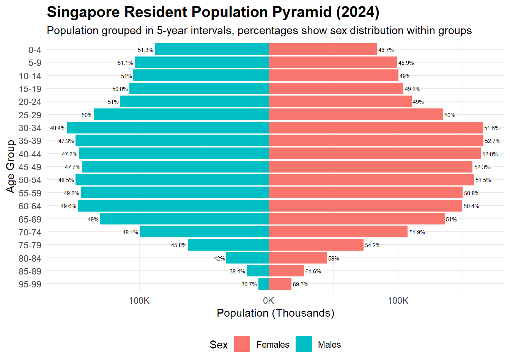

pacman::p_load(tidyverse, ggplot2, dplyr, forcats, ggthemes, patchwork, knitr, gt)Take_Home_Exercise01_part2
Author
Hao Liu
Published
May 8, 2025
Modified
May 8, 2025
Part 2: Comment on classmate submission (author: FU YILIN)
Original Visualization
Note
website link:
https://isss608-ay2025t2.netlify.app/take-home_ex/take-home_ex01/take-home_ex01
# A tibble: 0 × 6
# ℹ 6 variables: PA <chr>, SZ <chr>, Age <dbl>, Sex <chr>, Pop <dbl>,
# Time <dbl>grouped <- data %>%
select(PA, SZ) %>%
distinct() %>%
arrange(PA, SZ) %>%
group_by(PA) %>%
summarise(Subzones = paste(SZ, collapse = ", "))
grouped %>%
gt() %>%
tab_header(
title = "Planning Areas and Their Subzones"
)| Planning Areas and Their Subzones | |
|---|---|
| PA | Subzones |
| Ang Mo Kio | Ang Mo Kio Town Centre, Cheng San, Chong Boon, Kebun Bahru, Sembawang Hills, Shangri-La, Tagore, Townsville, Yio Chu Kang, Yio Chu Kang East, Yio Chu Kang North, Yio Chu Kang West |
| Bedok | Bayshore, Bedok North, Bedok Reservoir, Bedok South, Frankel, Kaki Bukit, Kembangan, Siglap |
| Bishan | Bishan East, Marymount, Upper Thomson |
| Boon Lay | Liu Fang, Samulun, Shipyard, Tukang |
| Bukit Batok | Brickworks, Bukit Batok Central, Bukit Batok East, Bukit Batok South, Bukit Batok West, Gombak, Guilin, Hillview, Hong Kah North |
| Bukit Merah | Alexandra Hill, Alexandra North, Bukit Ho Swee, Bukit Merah, City Terminals, Depot Road, Everton Park, Henderson Hill, Kampong Tiong Bahru, Maritime Square, Redhill, Singapore General Hospital, Telok Blangah Drive, Telok Blangah Rise, Telok Blangah Way, Tiong Bahru, Tiong Bahru Station |
| Bukit Panjang | Bangkit, Dairy Farm, Fajar, Jelebu, Nature Reserve, Saujana, Senja |
| Bukit Timah | Anak Bukit, Coronation Road, Farrer Court, Hillcrest, Holland Road, Leedon Park, Swiss Club, Ulu Pandan |
| Central Water Catchment | Central Water Catchment |
| Changi | Changi Airport, Changi Point, Changi West |
| Changi Bay | Changi Bay |
| Choa Chu Kang | Choa Chu Kang Central, Choa Chu Kang North, Keat Hong, Peng Siang, Teck Whye, Yew Tee |
| Clementi | Clementi Central, Clementi North, Clementi West, Clementi Woods, Faber, Pandan, Sunset Way, Toh Tuck, West Coast |
| Downtown Core | Anson, Bayfront Subzone, Bugis, Cecil, Central Subzone, City Hall, Clifford Pier, Marina Centre, Maxwell, Nicoll, Phillip, Raffles Place, Tanjong Pagar |
| Geylang | Aljunied, Geylang East, Kallang Way, Kampong Ubi, Macpherson |
| Hougang | Defu Industrial Park, Hougang Central, Hougang East, Hougang West, Kangkar, Kovan, Lorong Ah Soo, Lorong Halus, Tai Seng, Trafalgar |
| Jurong East | International Business Park, Jurong Gateway, Jurong Port, Jurong River, Lakeside (Business), Lakeside (Leisure), Penjuru Crescent, Teban Gardens, Toh Guan, Yuhua East, Yuhua West |
| Jurong West | Boon Lay Place, Chin Bee, Hong Kah, Jurong West Central, Kian Teck, Safti, Taman Jurong, Wenya, Yunnan |
| Kallang | Bendemeer, Boon Keng, Crawford, Geylang Bahru, Kallang Bahru, Kampong Bugis, Kampong Java, Lavender, Tanjong Rhu |
| Lim Chu Kang | Lim Chu Kang |
| Mandai | Mandai East, Mandai Estate, Mandai West |
| Marina East | Marina East |
| Marina South | Marina South |
| Marine Parade | East Coast, Katong, Marina East (Mp), Marine Parade, Mountbatten |
| Museum | Bras Basah, Dhoby Ghaut, Fort Canning |
| Newton | Cairnhill, Goodwood Park, Istana Negara, Monk's Hill, Newton Circus, Orange Grove |
| North-Eastern Islands | North-Eastern Islands |
| Novena | Balestier, Dunearn, Malcolm, Moulmein, Mount Pleasant |
| Orchard | Boulevard, Somerset, Tanglin |
| Outram | China Square, Chinatown, Pearl's Hill, People's Park |
| Pasir Ris | Flora Drive, Loyang East, Loyang West, Pasir Ris Central, Pasir Ris Drive, Pasir Ris Park, Pasir Ris Wafer Fab Park, Pasir Ris West |
| Paya Lebar | Airport Road, Paya Lebar East, Paya Lebar North, Paya Lebar West, Plab |
| Pioneer | Benoi Sector, Gul Basin, Gul Circle, Joo Koon, Pioneer Sector |
| Punggol | Coney Island, Matilda, Northshore, Punggol Canal, Punggol Field, Punggol Town Centre, Waterway East |
| Queenstown | Commonwealth, Dover, Ghim Moh, Holland Drive, Kent Ridge, Margaret Drive, Mei Chin, National University Of S'pore, One North, Pasir Panjang 1, Pasir Panjang 2, Port, Queensway, Singapore Polytechnic, Tanglin Halt |
| River Valley | Institution Hill, Leonie Hill, One Tree Hill, Oxley, Paterson |
| Rochor | Bencoolen, Farrer Park, Kampong Glam, Little India, Mackenzie, Mount Emily, Rochor Canal, Selegie, Sungei Road, Victoria |
| Seletar | Pulau Punggol Barat, Pulau Punggol Timor, Seletar, Seletar Aerospace Park |
| Sembawang | Admiralty, Sembawang Central, Sembawang East, Sembawang North, Sembawang Springs, Sembawang Straits, Senoko North, Senoko South, The Wharves |
| Sengkang | Anchorvale, Compassvale, Fernvale, Lorong Halus North, Rivervale, Sengkang Town Centre, Sengkang West |
| Serangoon | Lorong Chuan, Seletar Hills, Serangoon Central, Serangoon Garden, Serangoon North, Serangoon North Ind Estate, Upper Paya Lebar |
| Simpang | Pulau Seletar, Simpang North, Simpang South, Tanjong Irau |
| Singapore River | Boat Quay, Clarke Quay, Robertson Quay |
| Southern Islands | Sentosa, Southern Group |
| Straits View | Straits View |
| Sungei Kadut | Gali Batu, Kranji, Pang Sua, Reservoir View, Turf Club |
| Tampines | Simei, Tampines East, Tampines North, Tampines West, Xilin |
| Tanglin | Chatsworth, Nassim, Ridout, Tyersall |
| Tengah | Brickland, Forest Hill, Garden, Park, Plantation, Tengah Industrial Estate |
| Toa Payoh | Bidadari, Boon Teck, Braddell, Joo Seng, Kim Keat, Lorong 8 Toa Payoh, Pei Chun, Potong Pasir, Sennett, Toa Payoh Central, Toa Payoh West, Woodleigh |
| Tuas | Tengeh, Tuas Bay, Tuas North, Tuas Promenade, Tuas View, Tuas View Extension |
| Western Islands | Jurong Island And Bukom, Semakau, Sudong |
| Western Water Catchment | Bahar, Cleantech, Murai |
| Woodlands | Greenwood Park, Midview, North Coast, Senoko West, Woodgrove, Woodlands East, Woodlands Regional Centre, Woodlands South, Woodlands West |
| Yishun | Khatib, Lower Seletar, Nee Soon, Northland, Springleaf, Yishun Central, Yishun East, Yishun South, Yishun West |
pyramid_data <- data %>%
group_by(Age, Sex) %>%
summarise(Pop = sum(Pop), .groups = "drop") %>%
mutate(Pop = if_else(Sex == "Males", -Pop, Pop))
pyramid_plot <- ggplot(pyramid_data, aes(x = Age, y = Pop, fill = Sex)) +
geom_bar(stat = "identity", width = 1) +
coord_flip() +
scale_y_continuous(labels = abs) +
labs(title = "Singapore Resident Population Pyramid (2024)",
x = "Age", y = "Population") +
theme_minimal()
pyramid_plot
Note
Good design principles
Symmetric layout: The chart clearly shows the population pyramid with a symmetrical and intuitive view of population distribution by sex and age.
Clean typography and grid: The distinct colors to represent females and males respectively, allows the viewers to clearly identify the different groups.
Clear labeling: The chart title, axis labels, and legend are all self‐explanatory.
Areas of improvement
Inadequate Axis Scale and Labels: The x-axis labels are difficult to read and interpret accurately. The scale could benefit from clearer labeling or formatting, such as using shorter units.
Lack of Age Grouping and Axis Detail: Age is listed individually (1–100), making the visualization overly granular and cluttered. Grouping ages into bins would streamline the visualization and improve readability.
Percentage on each single class: Adding percentage annotations within each age group to offer additional context.
library(dplyr)
library(ggplot2)
# Prepare data with age groups and percentage
pyramid_data <- data %>%
mutate(AgeGroup = cut(Age,
breaks = seq(0, 100, 5),
include.lowest = TRUE,
right = FALSE,
labels = paste(seq(0, 95, 5), seq(4, 99, 5), sep = "-"))) %>%
group_by(AgeGroup, Sex) %>%
summarise(Pop = sum(Pop), .groups = "drop") %>%
group_by(AgeGroup) %>%
mutate(TotalGroupPop = sum(Pop),
Percentage = round((Pop / TotalGroupPop) * 100, 1),
Pop = if_else(Sex == "Males", -Pop, Pop))
# Reorder age groups
pyramid_data$AgeGroup <- factor(pyramid_data$AgeGroup,
levels = rev(unique(pyramid_data$AgeGroup)))
# Plotting with percentages only and adjusted positions
ggplot(pyramid_data, aes(x = AgeGroup, y = Pop, fill = Sex)) +
geom_bar(stat = "identity", width = 0.9) +
coord_flip() +
scale_y_continuous(labels = function(x) paste0(abs(x / 1000), "K")) +
labs(title = "Singapore Resident Population Pyramid (2024)",
subtitle = "Population grouped in 5-year intervals, percentages show sex distribution within groups",
x = "Age Group",
y = "Population (Thousands)",
fill = "Sex") +
theme_minimal() +
theme(plot.title = element_text(size = 15, face = "bold"),
plot.subtitle = element_text(size = 11),
axis.text = element_text(size = 9),
legend.position = "bottom") +
scale_fill_manual(values = c("Males" = "#00BFC4", "Females" = "#F8766D")) +
geom_text(aes(label = paste0(Percentage, "%"),
hjust = if_else(Sex == "Males", 1.1, -0.1)),
size = 2,
color = "black")